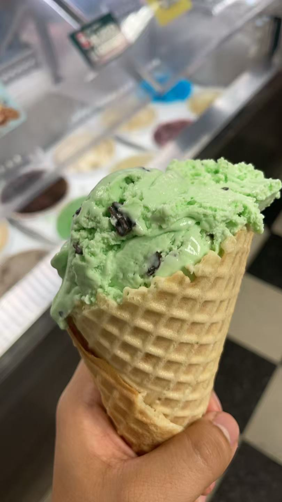

A Taste of Spartan Spirit Cool, creamy, and full of chocolatey crunch. Bleed Green is a refreshing mint-flavored ice cream with rich chocolate chips mixed throughout. The cool mint flavor and sweet chocolate pieces come together to create a classic combination that is both refreshing and satisfying. What Makes It Special - Cool Mint Flavor A refreshing mint taste gives this ice cream its signature cool flavor. - Chocolate Chips Chocolate chips add a sweet, rich crunch to every scoop. - Creamy Texture A smooth and creamy ice cream base brings the mint and chocolate together. Taste the Green More than just a flavor, Bleed Green brings together a classic mint-and-chocolate combination with the spirit of Michigan State. Cool. Creamy. Spartan. Take a scoop, taste the mint, and Bleed Green. Go Green! Go White!
